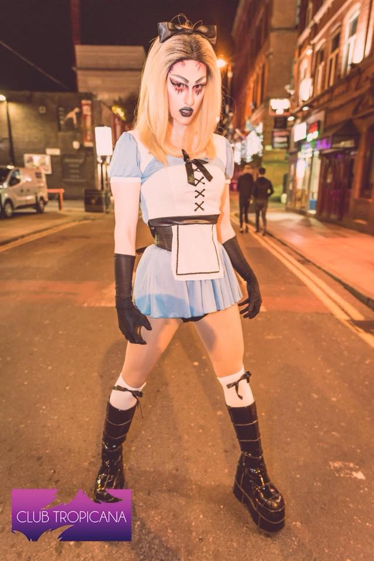
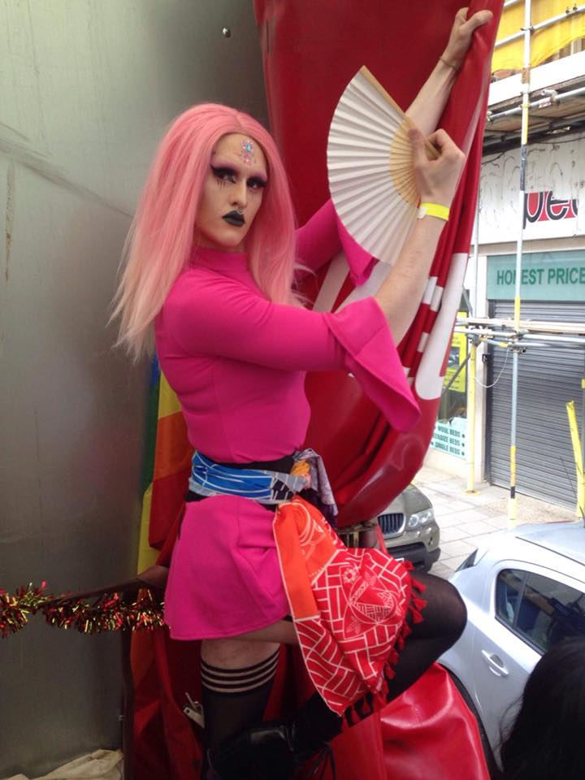

This was the site of my first proper performance with my guitar in front of an audience numbering more than fifty, and my friend was kind enough to trust me with his double neck Epiphone.
An old, and still my all time favourite, promotional non-work poster showing off how much I suit pink despite the obvious guy shining through the blush.
The digital poster sorted by my boss showing where I could be found during the weekend, working hard and untucked.
My personal favourite, rocking the pink again and showing off the short lived amazonian style muscles.
My most intimidating Gothic style look, complete with the giant "Self-Explanatory" fan.
The first use of my newly acquired ring light, bringing more attention to what makes me shine.
The man behind the woman.
Add a beret and you would've had a human version of James & the Giant Peach's Miss Spider.
Propbably the closest I've ever looked to your "Fabulous" standard queenie.
No prizes for finding out where I hung the christmas baubel.
My favourite halloween look, a very dark and bloody Alice, nicknamed "Malice".
Margate pride, where I rode atop a slowly moving truck pretending I wasnt the prettiest queen up there.
The only time I ever looked like a true Barbie doll, and even then the voice was a dead giveaway.